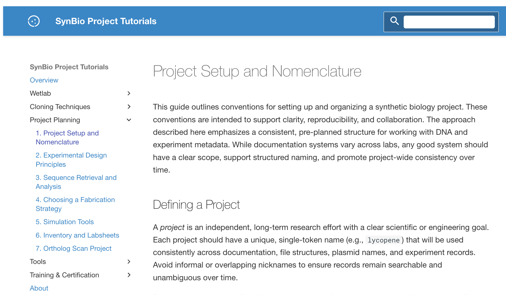
Project Planning https://ucb-bioe-anderson-lab.github.io/cloning-tutorials/
If you are doing any of the wetlab design projects for your final project, you will go through these tutorials. They describe the design of an ortholog scan, which is an example of what I call ‘vector editing’ The cloning-tutorials site, open at Project Planning — the chapters a wetlab design project is worked through, including the ortholog scan this section is about.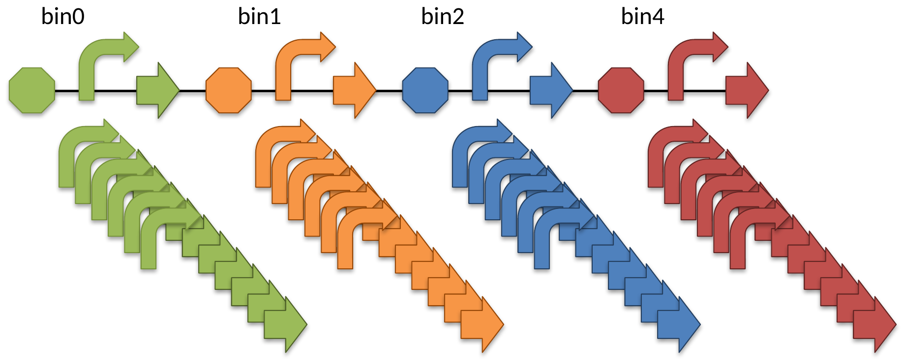
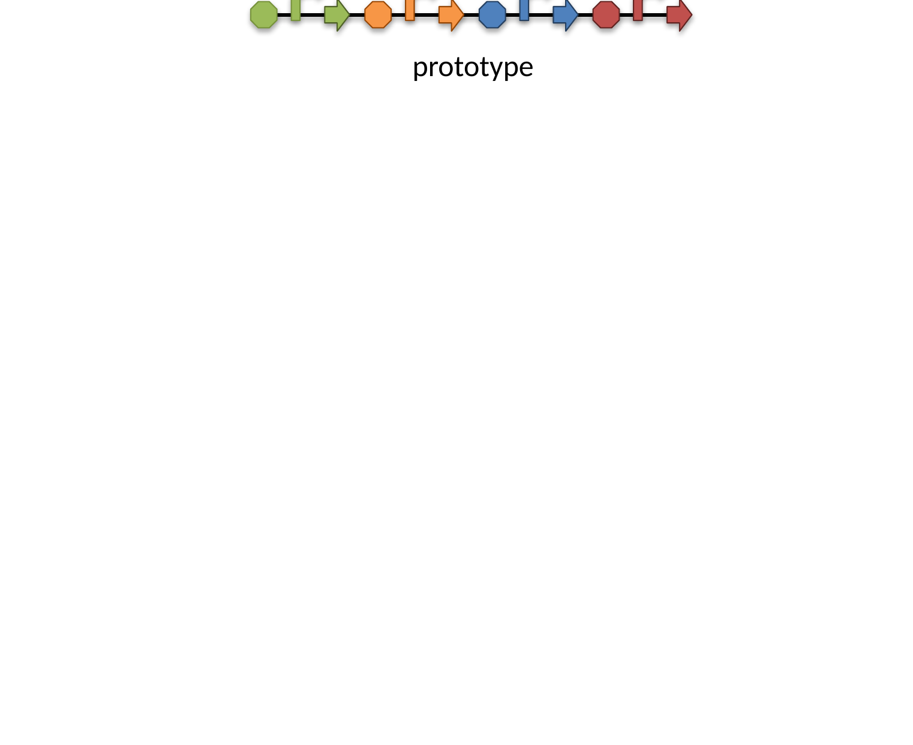
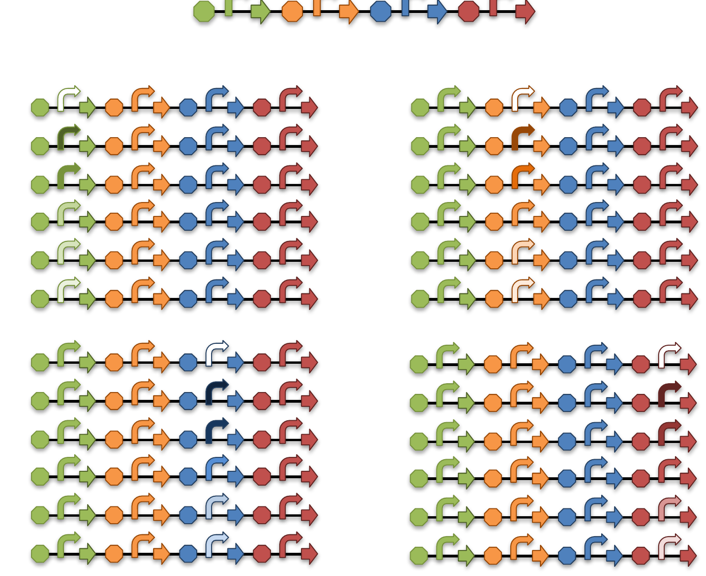
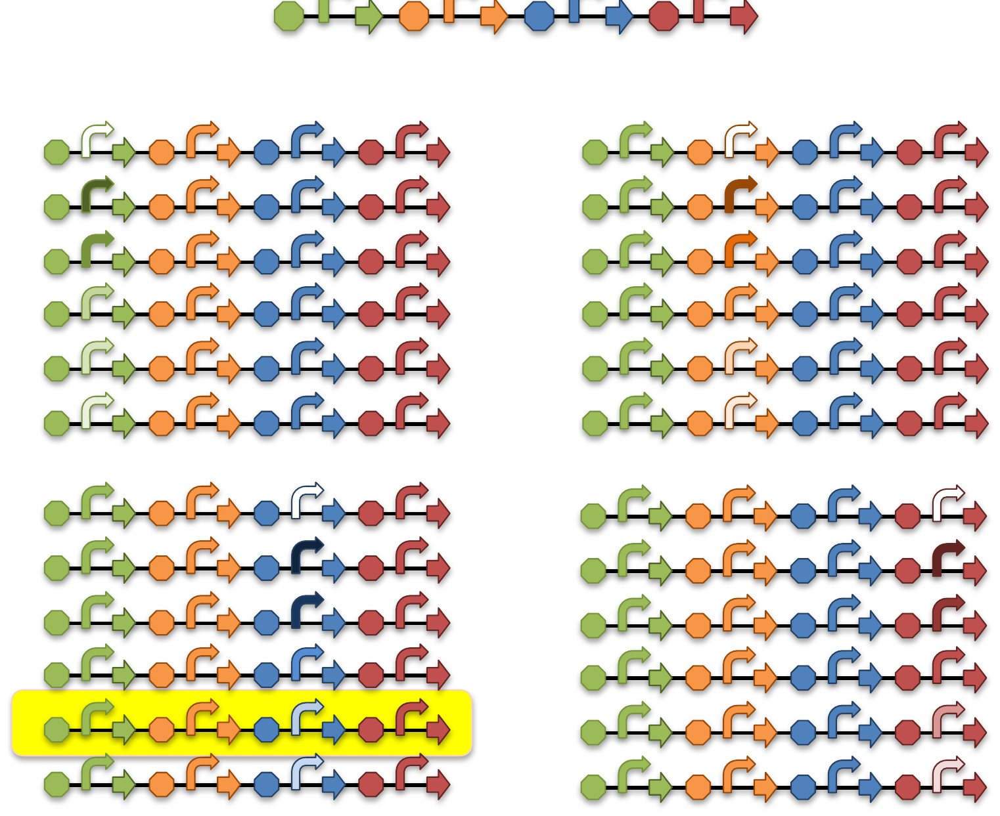
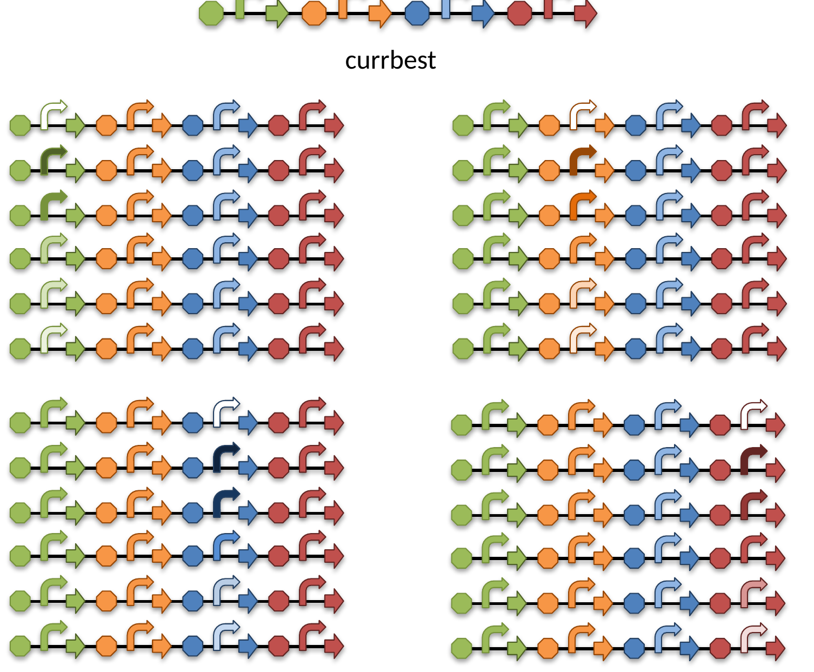
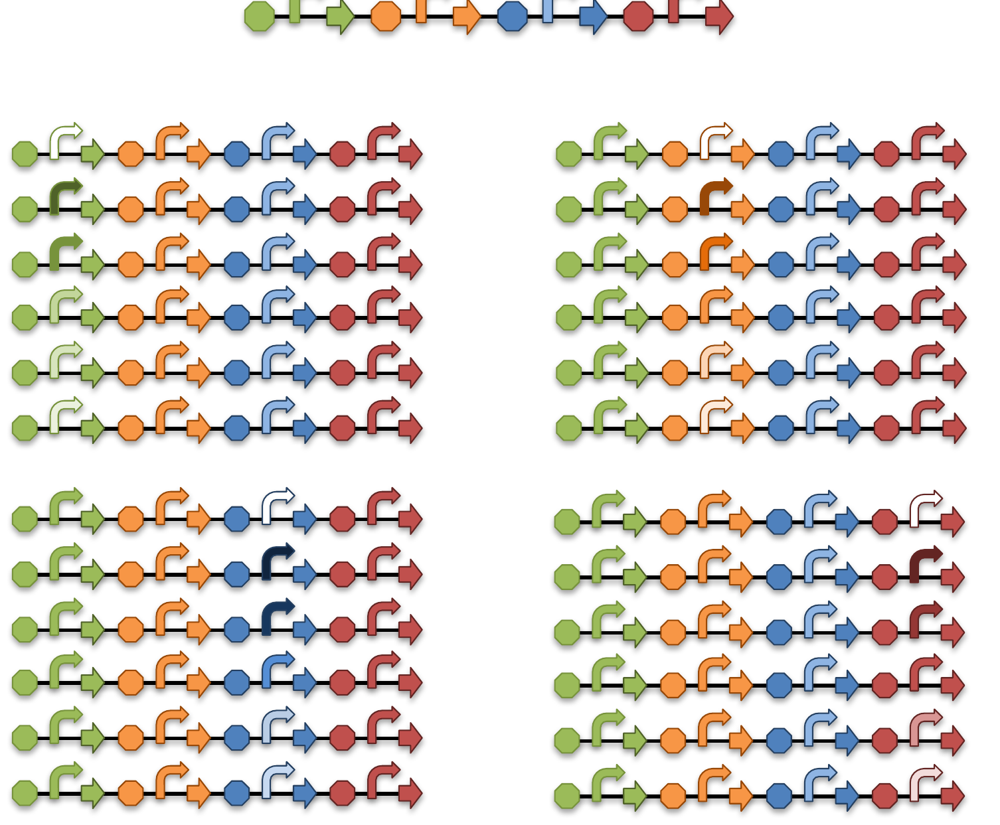
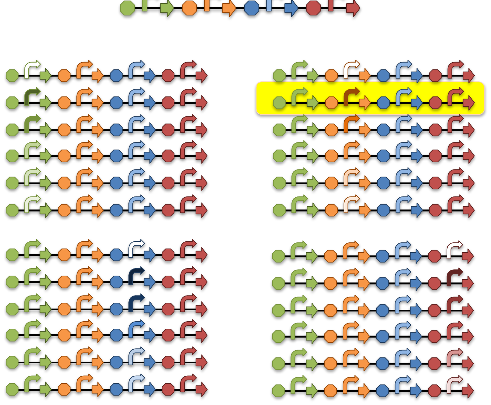
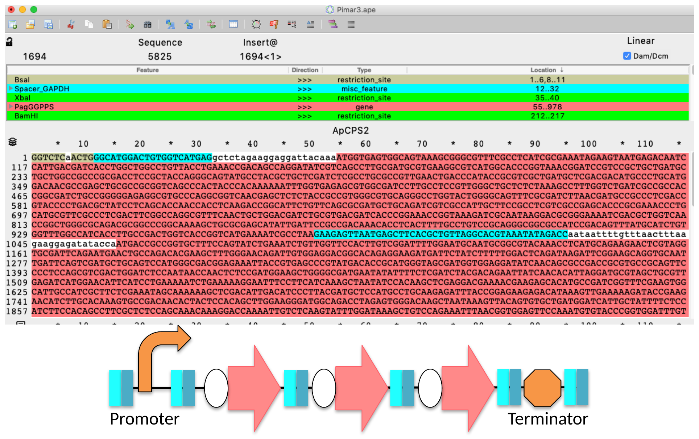
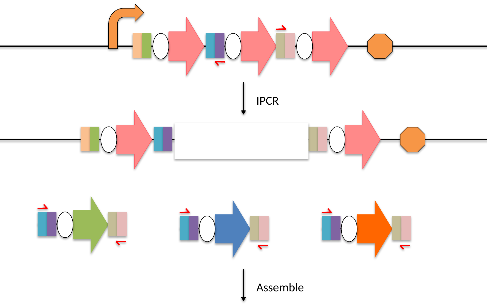
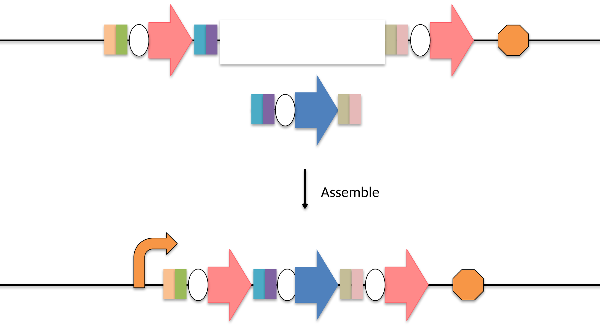
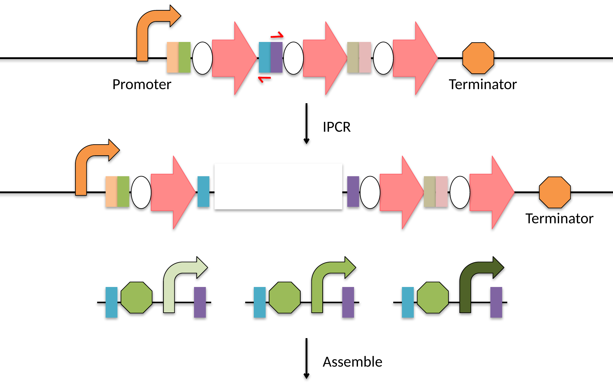